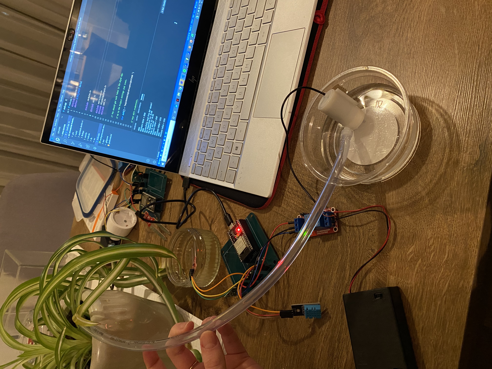

Solderen
Nadat iedereen de zelf ontworpen PCB's had ontvangen, konden we aan de slag gaan met het solderen van de PCB's.
We hebben pin headers met de PCB's samen ontvangen, deze hoor je dus te bevestigen en te solderen op de PCB's, zodat het ESP erop past.
Nadat dit gelukt was ging ik verder met het solderen van de overige pin headers voor het relay, de moisture sensor, LDR, de resistor, DHT sensor en de RF transmitter.
Dit waren nogal wat onderdelen, maar na het gewend raken aan de vele pin headers solderen voor het ESP, ging dit ook makkelijker.
Ik heb echter niet mijn eigen PCB ontwerp gebruikt, aangezien ik met mijn projectgroepje ging solderen en die van Sjoerd er georganiseerder uitzag.
Zoals te zien is op de pagina van de workshops heb ik uiteraard wel een geheel eigen PCB ontworpen en ook ontvangen.
Het uiteindelijke resultaat van de gesoldeerde componenten op het PCB is het volgende:

IoT schakeling: plant watersysteem
Uiteraard was het uiteindelijke doel om de IoT schakeling te demonstreren, dit is gelukt en zoals getoond wordt in de video hieronder is er te zien dat er water door de slang gaat en in de plant.

{kind=link}
Zoals in de beelden hierboven te zien is, krijgt mijn laptop de waarden door en deze worden in de output weergegeven. Deze waren ook te zien op mijn telefoon via de Blynk app.
De moistsensor gaf aan dat de waarde te laag was en dat de plant dus water nodig had. Zoals te zien is, zat de sensor niet in de plant zelf, omdat deze niet droog genoeg bleek te zijn. Vandaar dat we eerst hebben getest of deze werkte door hem in een bakje met water te doen.
Daaruit concludeerden we dat hij het fatsoenlijk deed, omdat de moistsensor hoge waarden doorgaf wat dus aangeeft dat de pomp het niet hoeft te doen aangezien de plant geen water nodig heeft. Na het afdrogen van de sensor en een minimale hoeveelheid water erop te doen, gaf de sensor een lage waarde door en deed de pomp het weer.
Door de delay functie wordt er even gewacht tussen de metingen en de SerialPrintin functie zorgt ervoor dat de waarde in de output wordt gegeven.
Doordat dit in de loop functie staat blijft dit steeds herhalen. Serial begin met een baud rate van 9600 geeft aan dat dat de snelheid waarbij informatie in een communicatie kanaal wordt overgedragen 9600 bits per seconde is. Dingen die steeds herhaalt moeten worden zijn dan ook steeds te vinden in de loop functie, zoals de output die ook van de pomp door de print functie wordt weergegeven.
Er wordt dan getoond of de pomp aan of uit staat. Hetzelfde geldt voor de DHT sensor, de print functie geeft hiervan de temperatuur en vochtigheid weer. Deze metingen hebben ook een delay van 1000, zodat er niet te snel en te vaak wordt gemeten.
IoT schakeling in het bedrijfsleven
Er zijn veel mogelijkheden voor de IoT schakeling die gemaakt is, vooral binnen bepaalde bedrijfssectoren.
Allereerst de mogelijkheden die de schakeling kan bieden. De schakeling die is gemaakt kan natuurlijk voor de bedrijven die (specialere) planten verkopen een grote oplossing zijn.
Het zou enorm veel werk kosten voor bepaalde bedrijven om elke plant handmatig water te moeten geven, vooral aangezien iedere plant anders is en andere behoeften heeft.
Door het plantensysteem te gebruiken middels de IoT schakeling op grotere schaal (dus voor een groter aantal planten) zou er een plantensysteem moeten worden aangesloten op elke plant. Het is niet nodig om ook een DHT-sensor bij elke plant te installeren, omdat de planten zich meestal in kas bevinden waar ze worden onderhouden.
In die kas zijn de temperatuur en vochtigheid grotendeels hetzelfde, het ligt dus voornamelijk aan de moistsensor (net zoals bij de IoTschakeling hierboven) of de plant water nodig heeft of niet. Door een klein slangetje te bevestigen aan een stang (met gaten voor die slangen) die gekoppeld is aan een waterpomp, kan elke plant automatisch water gegeven worden.
Om te voorkomen dat er telkens wanneer één plant water nodig heeft, elke plant water wordt gegeven, kan er door middel van sensoren in de opening van het slangetje dat het water naar de plant pompt worden gemeten welke opening van de waterslangen geopend moet worden. De sensor gaat namelijk aan zodra de moistsensor aangeeft dat er water nodig is, zodat de opening opengaat van de waterslang en er water doorkan.
Als er geen water nodig is, zal er geen signaal naar de sensor worden gestuurd en ook geen water uit de pomp nodig zijn voor die specifieke plant.
Voor bedrijven is zo'n IoT schakeling dus enorm handig, aangezien er veel meer zorg is voor de plant en ook meer waarde wordt toegevoegd voor de klanten doordat ze aantonen zich op technologisch gebied te willen ontwikkelen.
Om zo'n IoT te kunnen installeren en aanschaffen, is er wel een redelijk grote investering nodig. Vandaar dat de planten waar het systeem voor is bedoeld, ook wel planten van exotische en zeldzame soorten zijn.
Het systeem kan ook gebruikt worden door grotere bedrijven die een assortiment hebben met meer standaard planten, die dezelfde zorg nodig hebben. Dat is dan veel makkelijker, omdat de sensoren niet nodig zijn om te meten wanneer er water nodig is voor iedere plant. Er kan worden gekeken naar de moistsensoren van de planten en als ze allemaal aangeven water nodig te hebben, dan kan er water worden toegediend via de waterpomp en slangen.
Reflectie IoT schakeling
Na het werken aan de schakeling en ook het bedenken van hoe deze binnen bedrijven kan worden toegepast, heb ik veel nieuwe dingen geleerd. Ik had van tevoren nog niet echt op deze manier gewerkt met de verschillende componenten en ook niet met Visual Studio Code.
Door echt na te denken over wat je allemaal met deze componenten kunt doen binnen bedrijfsprocessen, ben je in staat om de schakeling in veel bedrijfscontexten te plaatsen. Een paar bedrijfscontexten heb ik hierboven dus genoemd, een wat gespecialiseerdere planten verkoper en een planten bedrijf die wat algemenere planten verkopen.
Daarbuiten zijn nog meer mogelijkheden en vaak is het ook een kwestie van innovatief denken voor bedrijven om te bedenken waar je precies zo'n IoT schakeling kunt toepassen binnen je bedrijf. Bij organisaties die kantoortuinen hebben is een IoT schakeling ook een handige uitvinding die ervoor zorgt dat de planten automatisch genoeg water krijgen toegediend, zonder dat iemand er echt naar hoeft om te kijken.
Ook bij sommige openbare plekken zoals moderne winkelcentra waar zich veel planten bevinden, kan dit een creatieve oplossing zijn. In dat geval kunnen ook personeelskosten worden bespaard, aangezien er niet per se mensen moeten worden ingehuurd om planten steeds water te geven. De innovatie zal uiteraard pas op de lange termijn geld gaan besparen, omdat de aanschaf en volledige installatie ervan wel tijd kost en nogal wat werk is.
Ik vond het zelf in elkaar zetten van het plantsysteem heel interessant om te doen en vanzelfsprekend de werking ervan te kunnen zien. Op het moment dat je zoiets eindelijk ziet werken (in dit geval, bij een plant), denk ik dat veel mensen zich pas gaan realiseren wat je er eigenlijk allemaal mee kunt.